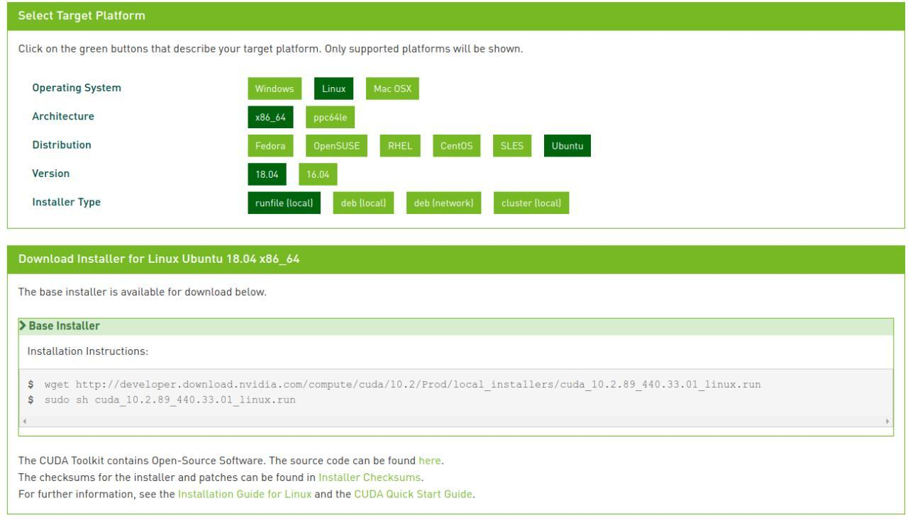

Setting up training environmnet
Setting up your environment for training is a rather difficult task given the multitude of caveates associated with various operating systems, versions, and hardware.
This guide, is to give as clear and simple instructions as possible that should be translatable to most "current" versions of Ubuntu (16/18/20).04 LTS.
By checking compatibility and ensuring to download the appropriate files for your setup, this should be achievable without stuffing the graphics drivers too much.
WARNING!!!
However, on that note, I have to give the obligatory WARNING!!! This is a guide only, and you are ultimately responsible for what you do to your system. We take no responsibility for any damage or system instability caused.
WARNING!!!
So, first thing first...
Requirements (recommended minimum)
- Ubuntu (18.04 LTS)
- sudo access
- RAM (16GB, more recommended)
- NVIDIA Graphics card with CUDA cores (4gb or more)
- NVIDIA drivers (440 - or something with CUDA 10.0 or higher)
- CUDA 10.0
- cuDNN 7.4.2
- tensorflow-gpu==1.13.1
Requirements notes
Graphics cards with more memory will be able to use a larget batch size. Batch size is a measure of how many images (reads) are parsed to the GPU at a time, thus a larger batch size = faster training.
A GTX/RTX or NVIDIA card with CUDA cores (TITAN/TESLA/etc) is needed here. AMD/ATI will not work.
We have used GTX1080Ti(4gb) and TESLA V100 (16GB).
Multi-GPU is not supported with the command line interface.
Graphics drivers are backward, but not forward compatible. So when you run nvidia-smi, as long as "CUDA Version" is higher than 10.0, we should be fine (for now at least Q1 2020)
CUDA, cuDNN, and tensorflow are all coupled by versions.
Please use the versions mentioned unless you know what you are doing.
Refer here for more info on version compatibility
Tensorflow 1.13.1 was used because of a backend keras issue that impacted multi-gpu training back when DeePlexiCon was being developed.
We will eventually move everything to TensorFlow 2.0 (where this has been fixed) when there is a major retraining or chemistry update.
If you get stuck in a boot loop, or can't boot the machine anymore/get black screens, boot into the GRUB bootloader, start a root shell, remove NVIDIA drivers, and re-install them. (details provided bellow)
Install/update NVIDIA drivers
WARNING
This is probably the most volatile step. Please proceed with caution.
Note, here nvidia-440 is for the driver version 440. Check compatibility here
Step 1
Method 1
sudo add-apt-repository ppa:graphics-drivers/ppa
sudo apt-get update
sudo apt install nvidia-440
Method 2
See devices and available versions:
sudo ubuntu-drivers devices
I see this:
vendor : NVIDIA Corporation
model : GP107M [GeForce GTX 1050 Ti Mobile]
driver : nvidia-driver-435 - distro non-free
driver : nvidia-driver-440 - third-party free recommended
driver : nvidia-driver-390 - distro non-free
driver : xserver-xorg-video-nouveau - distro free builtin
Then run
sudo ubuntu-drivers nvidia-driver-440
Step 2
Now reboot
Step 3
Check the drivers installed properly
nvidia-smi
You should see something like this
Fri May 29 03:29:58 2020
+-----------------------------------------------------------------------------+
| NVIDIA-SMI 440.64.00 Driver Version: 440.64.00 CUDA Version: 10.2 |
|-------------------------------+----------------------+----------------------+
| GPU Name Persistence-M| Bus-Id Disp.A | Volatile Uncorr. ECC |
| Fan Temp Perf Pwr:Usage/Cap| Memory-Usage | GPU-Util Compute M. |
|===============================+======================+======================|
| 0 GeForce GTX 105... On | 00000000:01:00.0 Off | N/A |
| N/A 45C P8 N/A / N/A | 1077MiB / 4040MiB | 0% Default |
+-------------------------------+----------------------+----------------------+
+-----------------------------------------------------------------------------+
| Processes: GPU Memory |
| GPU PID Type Process name Usage |
|=============================================================================|
| 0 1320 G /usr/lib/xorg/Xorg 47MiB |
| 0 1628 G /usr/bin/gnome-shell 47MiB |
| 0 2702 G /usr/lib/xorg/Xorg 299MiB |
| 0 2873 G /usr/bin/gnome-shell 214MiB |
+-----------------------------------------------------------------------------+
If you are getting a boot loop or black screen/crashes after reboot
Get into the GRUB bootloader. See here for a few ways to do that.
Drop into a root shell with internet access. You can do this in the advanced options. See here for more info
Remove all nvidia packages
sudo apt-get purge nvidia*
Ensure the ppa is added and update package list
sudo add-apt-repository ppa:graphics-drivers
sudo apt-get update
Install latest driver
sudo apt-get install nvidia-440
Another way is to read this and use the latest drivers.
sudo ubuntu-drivers devices
sudo ubuntu-drivers nvidia-driver-440
Installing CUDA 10.0
Now the hard part is over, we will install CUDA
Download the runfile (local) from here
Something like this:

under development
Source of inspiration for this guide, that helped me a lot.